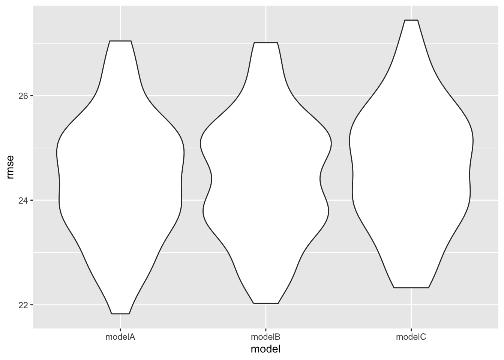
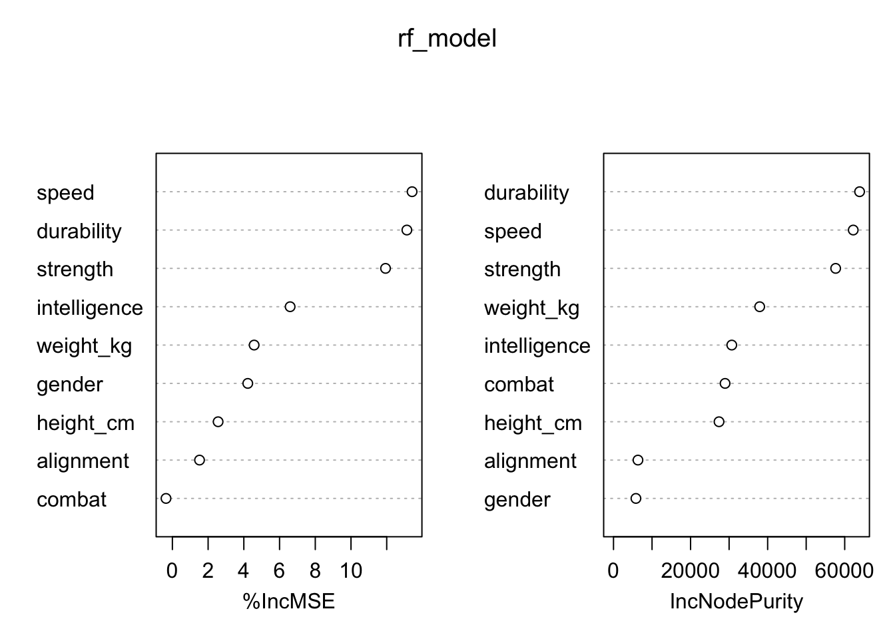
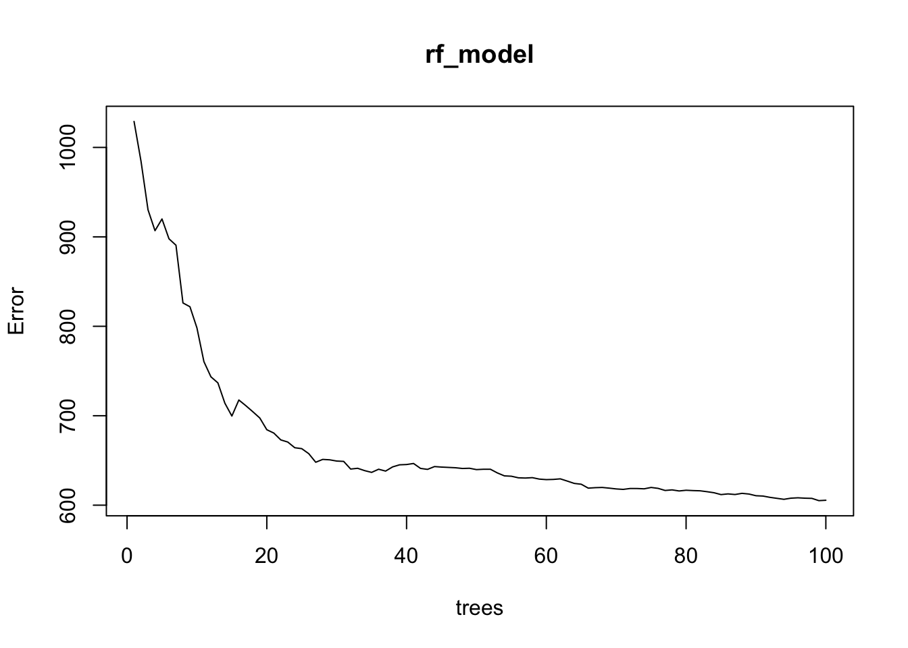

Have you ever been curious about what makes a superhero truly powerful? Is it their intelligence, physical strength, or probably the combination of the factors that determines their success? In this analysis, we delve into a data-driven approach to uncover the key traits that determine superhero power, using statistical and machine learning techniques to identify patterns and interactions.
library(tidyverse)
library(modelr)
library(mice)
library(mgcv)
library(randomForest)
library(readr)
library(dplyr)
library(patchwork)
library(car)
set.seed(1)We first do univariate analyses to predict the power by intelligence, strength, speed, durability, combat, height, weight, gender, and alignment respectively.
superheros <- read_csv("./data/superheroes.csv")
superheros_clean1 <- superheros %>%
filter(complete.cases(intelligence, strength, speed, durability, combat, height_cm, weight_kg, gender, alignment, power))
superheros_clean1$gender <- as.factor(superheros_clean1$gender)
superheros_clean1$alignment <- as.factor(superheros_clean1$alignment)
# we first do univariate analysis to find variables that significantly associate with the power with p value < 0.05
univariate_analysis = function(var, var_name){
model = summary(lm(power ~ var, data = superheros_clean1))
p_value = model$coefficients[2, 4]
return(data.frame(variable = var_name, p_value = p_value))
}
results = rbind(
univariate_analysis(superheros_clean1$intelligence, "Intelligence"),
univariate_analysis(superheros_clean1$strength, "Strength"),
univariate_analysis(superheros_clean1$speed, "Speed"),
univariate_analysis(superheros_clean1$durability, "Durability"),
univariate_analysis(superheros_clean1$combat, "Combat"),
univariate_analysis(superheros_clean1$height_cm, "Height"),
univariate_analysis(superheros_clean1$weight_kg, "Weight"),
univariate_analysis(superheros_clean1$gender, "Gender"),
univariate_analysis(superheros_clean1$alignment, "Alignment")
)
results$p_value <- round(results$p_value, 4)
library(knitr)
kable(results, col.names = c("Variable", "P-Value"), digits = 4, align = "c")| Variable | P-Value |
|---|---|
| Intelligence | 0.0000 |
| Strength | 0.0000 |
| Speed | 0.0000 |
| Durability | 0.0000 |
| Combat | 0.0615 |
| Height | 0.1282 |
| Weight | 0.0394 |
| Gender | 0.3960 |
| Alignment | 0.6718 |
Based on the results, we found intelligence,
strength, speed, durability,
weight are significantly associated with the power with
p-value < 0.05.
We build a linear regression model to predict the power of superheros based on the four variables we identified.
sig_model = lm(power ~ intelligence + strength + speed + durability + weight_kg, data = superheros_clean1)
sig_model %>%
broom::tidy() %>%
dplyr::select(term, estimate, p.value) %>%
knitr::kable(digits = 4)| term | estimate | p.value |
|---|---|---|
| (Intercept) | 19.6052 | 0.0001 |
| intelligence | 0.2065 | 0.0010 |
| strength | 0.1037 | 0.0491 |
| speed | 0.3254 | 0.0000 |
| durability | 0.2704 | 0.0000 |
| weight_kg | -0.0165 | 0.1917 |
# Intelligence, strength, speed, durability, speed, weight are significant predictors Based on the results, we see that 4 of the variables are
statistically significant at 0.05 significance level. The effect of
weight is not statistically significant at the 0.05 level.
Superheroes’ power is positively related to
intelligence, strength, speed,
and durability, while negatively related to
weight.
After performing forward, backward, and stepwise model selection,
only the effect of durability, speed, and
intelligence were significant, therefore, we included them
in the regression model A. Since we had identified that the effect of
strength is also significant, we included
durability, speed, intelligence,
and strength in the second linear regression model. For the
last linear regression model, all 9 variables were included.
The three models we built are:
Model A: Power ~ Intelligence, speed, durability
# After having forward/backward/stepwise model selection, durability, speed, intelligence, and strength are left in the model, and only durability, speed, intelligence are significant.
lm_modelA <- lm(power ~ intelligence + speed + durability, data = superheros_clean1) %>%
broom::tidy() %>%
dplyr::select(term, estimate, p.value) Model B: Power ~ Intelligence, strength, speed, durability
lm_modelB <- lm(power ~ intelligence + strength + speed + durability, data = superheros_clean1) %>%
broom::tidy() %>%
dplyr::select(term, estimate, p.value) Model C: Power ~ Intelligence, strength, speed, durability, combat, height_cm, weight_kg, alignment, gender
lm_modelC <- lm(power ~ intelligence + strength + speed + durability + combat + height_cm + weight_kg + alignment + gender, data = superheros_clean1) %>%
broom::tidy() %>%
dplyr::select(term, estimate, p.value)We wanted to compare the predictive performance of these 3 competing methods by using cross validation for repeating 100 times, and then comparing distribution of Root Mean Squared Error (RMSE) and of AIC of each model.
cv_df =
crossv_mc(superheros_clean1, 100) |>
mutate(
train = map(train, as_tibble),
test = map(test, as_tibble))
cv_df =
cv_df |>
mutate(
lm_modelA = map(train, \(df) lm(power ~ intelligence + speed + durability, data = df)),
lm_modelB = map(train, \(df) lm(power ~ intelligence + strength + speed + durability, data = df)),
lm_modelC = map(train, \(df) lm(power ~ intelligence + strength + speed + durability + combat + height_cm + weight_kg + alignment, data = df))) %>%
mutate(
rmse_modelA = map2_dbl(lm_modelA, test, \(mod, df) rmse(model = mod, data = df)),
rmse_modelB = map2_dbl(lm_modelB, test, \(mod, df) rmse(model = mod, data = df)),
rmse_modelC = map2_dbl(lm_modelC, test, \(mod, df) rmse(model = mod, data = df)))
cv_df |>
dplyr::select(starts_with("rmse")) |>
pivot_longer(
everything(),
names_to = "model",
values_to = "rmse",
names_prefix = "rmse_") |>
mutate(model = fct_inorder(model)) |>
ggplot(aes(x = model, y = rmse)) + geom_violin() Although model A has similar RMSE distribution with model B, model B has the relatively lowest RMSE distribution overall. Moreover, model B has the lowest AIC value. Therefore, model B is the model has good predictive accuracy.
To further verify the importance of selected predictors, a random forest model was trained. We choose to build 100 decision trees and 3 random predictor variables are selected and considered at every split.
##
## Call:
## randomForest(formula = power ~ combat + strength + speed + durability + intelligence + height_cm + weight_kg + gender + alignment, data = superheros_clean1, mtry = 3, ntree = 100, importance = TRUE)
## Type of random forest: regression
## Number of trees: 100
## No. of variables tried at each split: 3
##
## Mean of squared residuals: 605.4973
## % Var explained: 27.19importance <- importance(rf_model)
varImpPlot(rf_model)
plot(rf_model) From the variable importance plot, we found that speed, durability, strength, and intelligence are the most important variables for improving the model’s predictive performance and better fit as they have a larger %IncMSE and increase in Node Purity, which is consistent with our model. Therefore, intelligence, Strength, Speed, Durability was identified as the primary contributors to superheroes’ power.
Our final model would be:
lm_modelB <- lm(power ~ intelligence + strength + speed + durability)
Look at Model B:
lm_modelB <- lm(power ~ intelligence + strength + speed + durability, data = superheros_clean1) %>%
broom::tidy() %>%
dplyr::select(term, estimate, p.value)
kable(lm_modelB, digits = 4)| term | estimate | p.value |
|---|---|---|
| (Intercept) | 18.5961 | 0.0001 |
| intelligence | 0.2076 | 0.0010 |
| strength | 0.0819 | 0.1012 |
| speed | 0.3402 | 0.0000 |
| durability | 0.2603 | 0.0000 |
Based on the results, intelligence,
Strength, Speed, and Durability
are positively related to power. For one-unit increase in
speed, it causes the largest increase in
power, while one-unit increase in strength
causes the least increase.